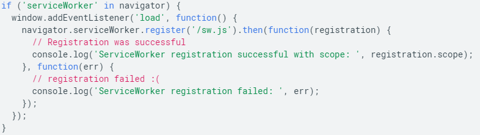
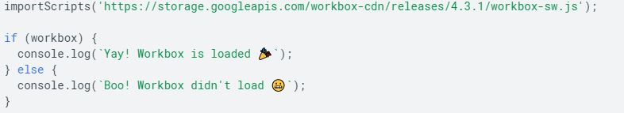
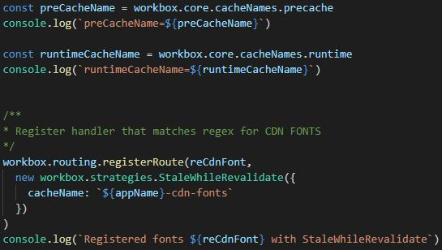
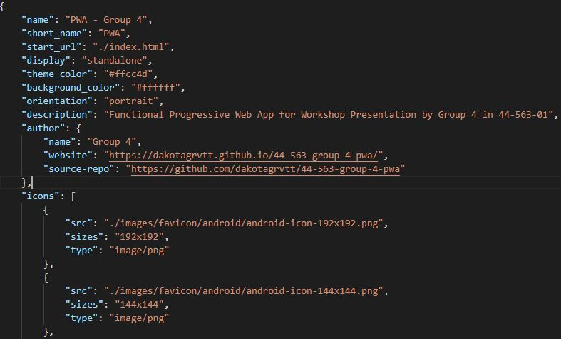

Service Worker
Service workers provide external functionality found in today's most modern applications.
This may include:
- Background syncing
- Push Notifications
- File caching
Service workers run seperately from the webpage (AKA the main thread) and requires HTTPS on the host server to run as it must intercept and alter network requests. It may also run on the localhost.
Service workers must be registered first so the browser will know where the service-worker is however.
More about the service worker can be found here.
Workbox
After registering your Service Worker, the user can import Google's own Workbox JS library.
Workbox's main feature that makes it so useful for PWA developement is it allows you to listen and respond to requests from your webpage using the routing and strategies modules. These make caching and scheduling cache updates easier.
To learn more about Workbox, check out their documentation here.
Manifest
A simple JSON file which tells the browser about your web application and how it should behave when installed on a device.
Data can include the name of the app, it's description, what page opens when the app is launched(start_url), application icon color, and favicon file destinations.
Favicons will be used on all devices, so to accomodate them, you should use sites like Favicon.io or Favicon Generator to automatically generate the neccessary sized icons and manifest JSON. These icons may be used in places like browser tabs and phone or desktop home screens.
More about the manifest can be found here.